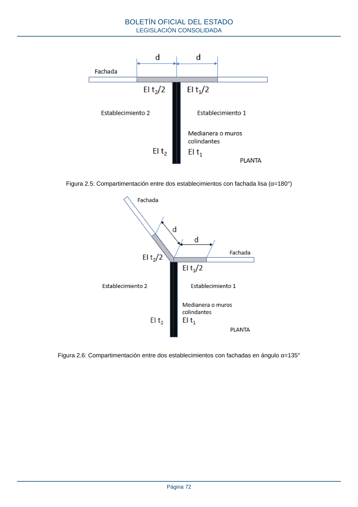

RSCIEI · Página 72 · versión 2025-04-10
SHA256: 85aa0af25d51e5b58d8975a4eefbf76d3f57a8933445cfe814ae9c4818a2e3e7 · página física 72 de 108 · métodos de encabezado
solo si están cotejados.
Formatos: Markdown · JSON de bloques · PDF p. 72 · imagen PNG
Figura 2.5: Compartimentación entre dos establecimientos con fachada lisa (α=180°) Figura 2.6: Compartimentación entre dos establecimientos con fachadas en ángulo α=135° BOLETÍN OFICIAL DEL ESTADO LEGISLACIÓN CONSOLIDADA Página 72
